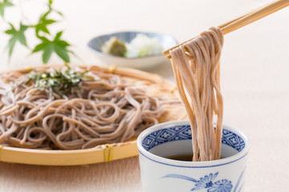
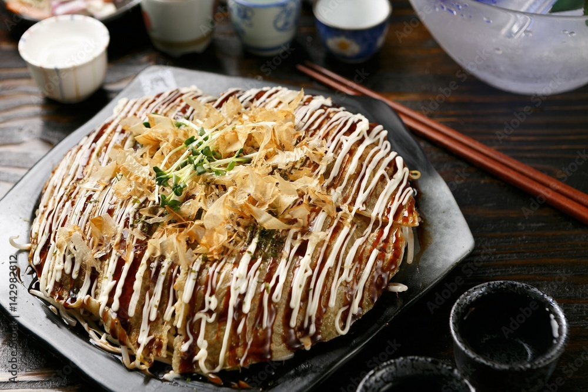

재료
재료(2인분/45분)
닭다리살 400g(브라질산 냉동)
진간장 1샷
소주 1샷
생강 1조각(옵션)
말린 매운 베트남 고추 3개(옵션)
전분가루 50g
식용유 500ml
1. 먼저 생강 갈은것, 고추, 간장, 소주에 닭다리살을 재워준다 (10분)
2. 닭을 적당한 크기로 썰고 전분가루를 묻힌 뒤
3. 작은 냄비에 기름을 500ml 붇고 달궈지면
4. 닭을 넣고 2분, 뒤집어서 1분 정도 튀겨준다.
닫기
재료
두툼한 고기와 튀김 반죽
1. 11mm의 등심 고기
2. 그리고 바삭한 튀김을 만들어줄 튀김 반죽
3. 고기를 잘 다져준다
4. 그리고 튀김옷을 입히고 기름통에 넣는다
닫기
재료 돈까스 양파 채 썰기
1. 쯔유 물
2. 푼 계란
3. 일단 돈까스를 튀기고
4. 양파를 채 썬다
5. 그리고 쯔유와 물을 1 대 4로 섞은뒤
6. 채썬 양파 위에 부어준다
7. 그리고 계란을 부어준다
닫기
재료
밀가루, 계란 전분, 1큰술.
계란, 1개.
베이킹소다, 1작은술.
소금, 0.5작은술.
뜨거운 물, 1/4컵.
사골육수, 3/4봉지. 2인분 하실 거면 그냥 한 봉지 쓰시면 됩니다
숙주, 1줌.
대파, 10센티 가량.
미소된장, 2큰술.
밀가루 1.5컵에 전분, 소금, 베이킹파우더를 섞어두고.
물을 끓인 후 계란 1개와 함께 뜨거운 물 1/4컵을 밀가루에 부어주세요
잘 치대줍니다. 물이 부족한 것 같아도 말다 보면 딱 맞습니다
도마에 밀가루를 꽤나 뿌리고, 반죽을 얇게 밉니다.
넓고 얇게 민 다음에 찬물에 씻어둡니다.
사골육수를 끓인 뒤 미소된장 두 큰술을 풀어주세요.
끓으면 면을 넣고 다시 끓을 때까지만 둡니다
그릇에 면과 국물, 숙주, 파를 담으면 완성입니다!!!
닫기
간장 25ml
맛술(미림) 50ml
설탕 50g
다시마 2장
물 1L
가쓰오부시 40g
물에 다시마 넣고 30분 불려준다
그리고 잔장 베이스를 만든다
맛술을 냄비에 넣고 1분간 끓여주세요
끓기 시작하면 간장과 설탕 넣고 약불에서 5분 끌여준다
불에서 내려서 식혀주세요
30분 불린 다시마 물을 끓여주세요
물이 끓으면 가쓰오부시 넣고 15분 끓여주세요ㅕ
끓고나면 불을 끄고 그대로 5분을 두세요
육수도 식혀주세요
간장:육수는 1:8 비율 또는 2:8 비율로 섞어준다
그니까 레시피를 찾아달라해
무를 갈아주고 쪽파를 준비하고,와사비도 준비해준다
부침가루나, 타코야키 또는 오코노미야키 믹스를 사용하기
달걀 하나와 물을 넣어 후루룩 떨어지는 농도로 묽게 반죽한다.
속재료는 문어 텐까스 대파 옥수수를 준비한다
식용유와 버터를 녹인 다음, 반죽을 약간 붓고 재료를 골고루 넣고,ㅡ 다시 반죽을 붓는다.
약불에서 동글동글하게 구워준다.
다 구워졌으면 마요네즈와 소스, 대파, 가쓰오부시를 올려 마무리한다.
닫기
오코노미야키
부침가루2컵
찹쌀가루1/2컵
새우
베이컨
양파1/2
양배추1/4
후추가루
다진마늘1큰스푼
대파
돈까스소스
마요네즈
파슬리
물 1.5컵
계란5개
식용유
가쓰오부시
모든재료를 넣고 반죽을 섞는다
후라이팬에
기름을 붓고 반죽을 부어준다
그리고 뚜껑을 덮어준다
닫기
카레가루 150g, 돼지고기(안심) 400g ,감자 두개, 당근 한개,
양파(대) 한개ㅡ 고구마 한개,
후추와 소금
감자 두개, 당근 한개, 양파 한개 깍둑 썰어서 준비한다
웍에 돼지고기를 먼저 볶아 준다
식용유를 두 바퀴 둘러주고 돼지고기를 볶는다
볶을 때는 소금 약간이랑 후추를 넣어 볶아 준다
돼지고기가 충분히 익으면 감자와 당근을 넣어 볶는다
그리고 고구마도 넣어 줍니다
야채가 반정도 익었다 싶으면 양파를 넣어 주는데요
양파를 미리 넣어주면 녹아내려서 양파는 감자와 당근 등 야채가 반정도 익었을 즘 양파 넣어주면 딱 좋다
여기서 제일 중요한건 물넣기이다
그리고 물의 양을 보면서 카레가루를 넣어준다
그리고 물을 조절하면서 카레가루도 조절하면 카레라이스를 진하게 끓일 수 있다
닫기
재료: 부침가루, 달걀, 물, 텐까스, 대파, 옥수수, 식용유, 버터, 소스, 대파, 가쓰오부시
부침가루나, 타코야키 또는 오코노미야키 믹스를 사용하기
달걀 하나와 물을 넣어 후루룩 떨어지는 농도로 묽게 반죽한다.
속재료는 문어 텐까스 대파 옥수수를 준비한다
식용유와 버터를 녹인 다음, 반죽을 약간 붓고 재료를 골고루 넣고,ㅡ 다시 반죽을 붓는다.
약불에서 동글동글하게 구워준다.
다 구워졌으면 마요네즈와 소스, 대파, 가쓰오부시를 올려 마무리한다.
닫기
가라아게
생선이나 채소, 치킨을 밀가루나 녹말가루를 두른 뒤에 튀겨내는 튀김 요리이다
돈가츠
돈가츠 일반적인 돈까스와는 달리 좀 더 두꺼운 고기를 사용해 튀기는 것이 특징인 튀김 요리이다
돈부리
일본식 덮밥 요리로 돈가츠면 돈가츠, 새우면 새우, 닭이면 닭 올리는 재료에 따라 이름과 맛이 달라지는 덮밥 요리이다
라멘
얇은 밀가루 면이 특징이며 각 지역이나 들어가는 조미료, 들어가는 재료에 따라 메뉴가 다 다른 면 요리이다

메밀소바
메밀가루로 반죽을 만들어 얇게 편 다음 가늘게 썰어서 차갑거나 따뜻한 츠유에 담가서 먹는 면 요리이다

오코노미야끼
밀가루 반죽에 고기, 오징어, 양배추, 계란 등 원하는 재료를 넣고 철판에서 구운 후 전용 소스와 마요네즈를 뿌린 후 가츠오부시를 올려먹는 부침 요리이다
카레라이스
인도와 영국에서 들어온 커리가 일본식으로 바뀐 요리로 여러가지 토핑을 추가한것이 특징인 요리이다
타코야끼
오사카의 대표적인 간식으로 밀가루 반죽 안에 작게 자른 문어, 파 등의 재료를 넣고 전용 틀에서 구운 후 가츠오부시와 전용 소스, 마요네즈를 올린 요리이다